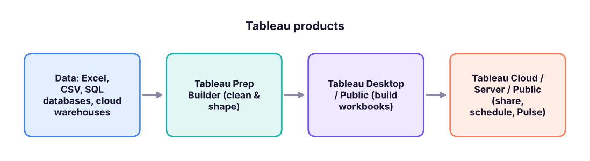
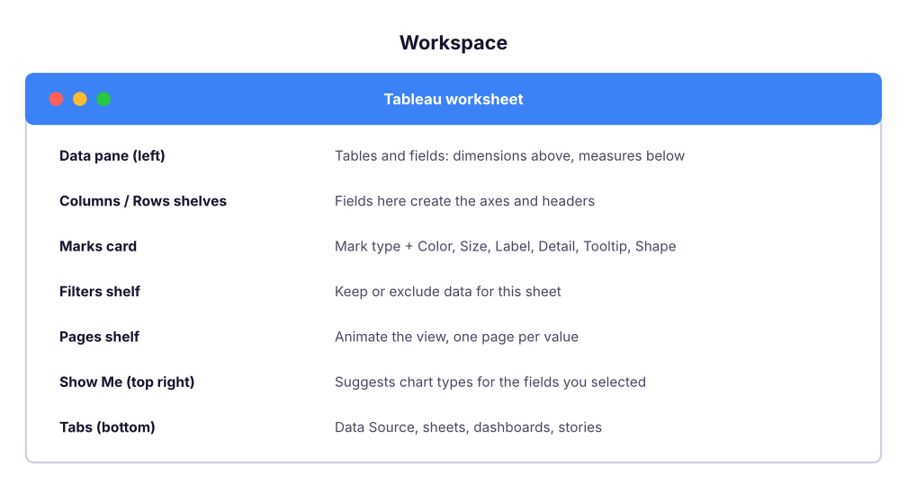
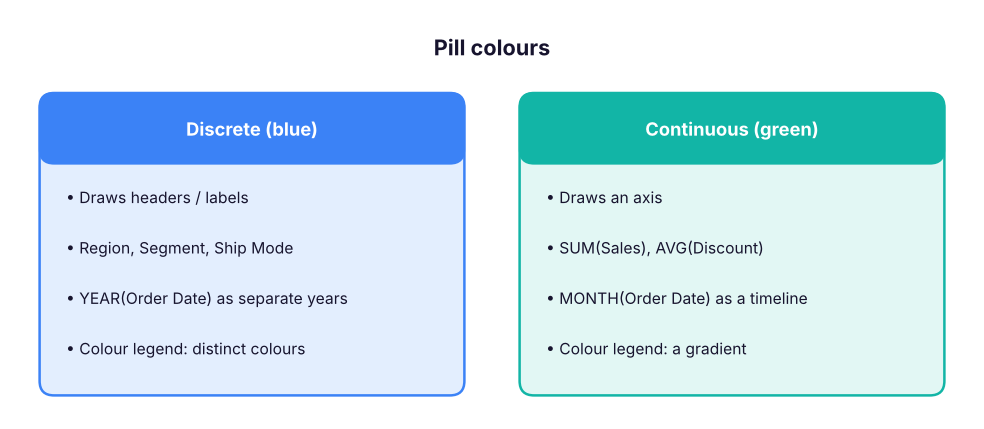

Getting Started with Tableau: Interface, Data Connections and Your First Views
Understand the Tableau product family, install Tableau Public, connect to the Superstore India data, read the Data Source page, learn dimensions vs measures and discrete vs continuous fields, master the Marks card and shelves, build and sort your first views, and save them to Tableau Public.
- Describe Tableau Desktop, Public, Cloud, Server, Prep and Pulse, and when each is used
- Connect to a CSV, check data types and rename or hide fields on the Data Source page
- Explain dimensions vs measures and discrete (blue) vs continuous (green) fields
- Build bar, line and text-table views with the Columns, Rows, Marks, Filters and Pages shelves
- Sort, label, format and save a workbook to Tableau Public
What is Tableau?
Tableau is a visual analytics platform: you drag fields onto shelves and Tableau writes the query, aggregates the data and draws the chart. It is owned by Salesforce and, with Power BI, is one of the two BI tools most often named in Indian analyst job posts. Where Power BI leans on DAX formulas and the Microsoft stack, Tableau is known for fast visual exploration and highly customisable charts.

| Product | What it is | Cost (2026) |
|---|---|---|
| Tableau Public (desktop app + website) | Free version of Desktop; workbooks are saved publicly on public.tableau.com | Free |
| Tableau Desktop | Full authoring tool; saves locally, connects to databases | Paid (Creator licence) |
| Tableau Cloud | Tableau's hosted service for sharing, refresh schedules and permissions | Paid, per user |
| Tableau Server | The same as Cloud, but installed on your company's own servers | Paid |
| Tableau Prep Builder | Visual tool to clean, join and reshape data before analysis | Included with Creator |
| Tableau Pulse / Tableau Agent | AI features: metric digests in plain language and an assistant that helps write calculations and build views | Cloud add-ons |
Learners should install Tableau Public (free). It has almost every authoring feature of Desktop. The two limits: workbooks are saved to your public profile (so never use confidential data) and it connects mainly to files (Excel, CSV, text, JSON, PDF, spatial) and Google Sheets rather than company databases. Your public profile also works as a portfolio for interviews.
Install and connect
- Go to public.tableau.com → Create → download Tableau Public for Windows or Mac and install it; sign up for a free profile.
- Open Tableau Public. On the Connect pane choose Text file and pick
superstore_sales.csv(for an Excel file choose Microsoft Excel). - The Data Source page opens: the table appears in the canvas and a preview grid below it.
- Check each column's data type icon (Abc = string, # = number, calendar = date, globe = geographic). Click an icon to change it.
- Click Sheet 1 at the bottom to start building.
The data you connect to is the same Superstore India file used in the Excel and Power BI lessons. Check its size before you build anything:
import pandas as pd
df = pd.read_csv("superstore_sales.csv", parse_dates=["order_date", "ship_date"])
print(df.shape)
print(df.dtypes.astype(str).value_counts().to_dict())
print("Orders from", df.order_date.min().date(), "to", df.order_date.max().date())
df.head(3)(6323, 19)
{'object': 12, 'float64': 3, 'int64': 2, 'datetime64[ns]': 2}
Orders from 2023-01-01 to 2025-12-31| row_id | order_id | order_date | ship_date | ship_mode | customer_id | customer_name | segment | city | state | region | product_id | category | sub_category | product_name | sales | quantity | discount | profit | |
|---|---|---|---|---|---|---|---|---|---|---|---|---|---|---|---|---|---|---|---|
| 0 | 1 | IN-2023-00001 | 2023-01-01 | 2023-01-05 | Second Class | C0765 | Ishaan Gupta | Consumer | Bengaluru | Karnataka | South | P0059 | Technology | Phones | Nova Phone 223 | 36,000 | 2 | 0 | 3,472.55 |
| 1 | 2 | IN-2023-00001 | 2023-01-01 | 2023-01-05 | Second Class | C0765 | Ishaan Gupta | Consumer | Bengaluru | Karnataka | South | P0050 | Office Supplies | Appliances | Orbit Appliance 798 | 3,850 | 1 | 0 | 1,169.54 |
| 2 | 3 | IN-2023-00001 | 2023-01-01 | 2023-01-05 | Second Class | C0765 | Ishaan Gupta | Consumer | Bengaluru | Karnataka | South | P0011 | Furniture | Tables | Orbit Table 248 | 62,080 | 4 | 0 | 6,044.47 |
6,323 rows (order lines) and 19 columns: Tableau will show these as fields in the Data pane.
The Data Source page
| Feature | Where | Use |
|---|---|---|
| Rename a field | Click the column header → Rename | Friendly names such as "Sub-Category" |
| Hide a field | Column menu → Hide | Remove IDs you will never use |
| Change type / geographic role | Click the type icon | Make state a State/Province so it maps |
| Split | Column menu → Split | customer_name → first and last name |
| Pivot | Select columns → Pivot | Turn month columns into rows |
| Data Interpreter | Left pane checkbox | Clean messy Excel sheets with titles and merged cells |
| Live vs Extract | Top right | Extract (.hyper) is a fast snapshot; Live queries the source every time |
| Filters (data source) | Top right → Add | Keep only the rows the workbook needs |
The workspace

Dimensions vs measures, discrete vs continuous
Tableau sorts every field in two ways, and the colour of a pill tells you which:
| Meaning | Example | What it creates | |
|---|---|---|---|
| Dimension | Categories you slice by | Region, Category, Customer Name | Groups (one mark per value) |
| Measure | Numbers you aggregate | Sales, Profit, Quantity | SUM, AVG, COUNT… |
| Discrete (blue pill) | Separate values | Region, YEAR(Order Date) as "2023, 2024" | Headers |
| Continuous (green pill) | An unbroken range | SUM(Sales), exact date | Axes |

A measure dropped into the view is aggregated (default SUM). Right-click the pill → Measure to switch to Average, Median, Count, Count (Distinct), Minimum, Maximum, Standard deviation and so on.
Your first views
Sales by region (bar chart)
Drag Region to Rows and Sales to Columns. Tableau writes the equivalent of SELECT region, SUM(sales) FROM superstore GROUP BY region and draws one bar per region:
by_region = (df.groupby("region")[["sales", "profit"]].sum() / 1e7).round(2).sort_values("sales", ascending=False)
by_region.columns = ["Sales (₹ crore)", "Profit (₹ crore)"]
by_region| Sales (₹ crore) | Profit (₹ crore) | |
|---|---|---|
| region | ||
| South | 5.40 | 0.47 |
| West | 5.20 | 0.47 |
| North | 4.90 | 0.46 |
| East | 4.65 | 0.44 |